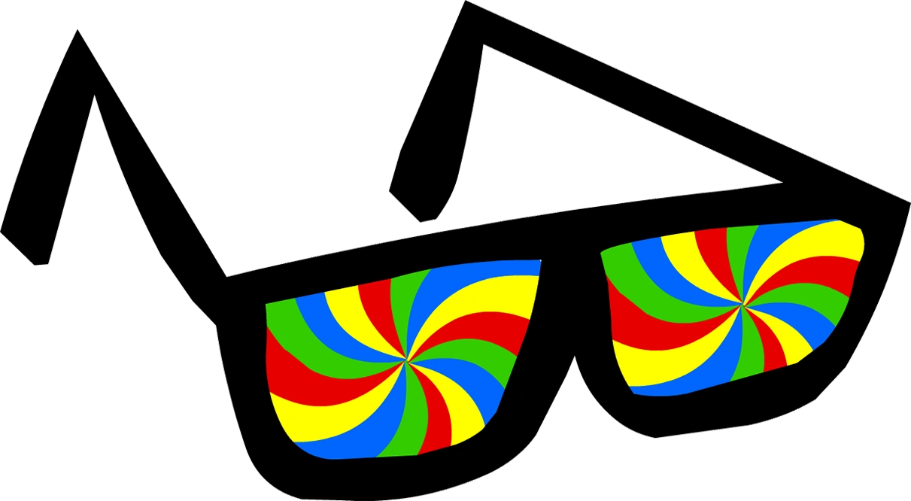
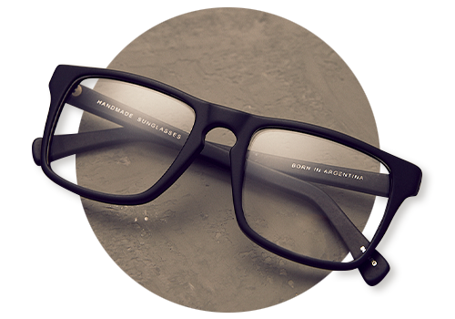

01. Reducen la luz nocturna
Al absorber ciertas longitudes de onda, entra menos luz al ojo. No se recomienda usarlas de noche ni para conducir en baja iluminación salvo modelos específicos de interior avalados por un especialista.

El daltonismo hereditario no tiene cura genética hasta el momento. Sin embargo, en personas con formas leves o moderadas (como deuteranomalía o protanomalía), ciertos lentes con filtros espectrales específicos pueden aumentar el contraste entre el rojo y el verde.
Estas lentes bloquean una banda estrecha de longitudes de onda donde se superponen las señales de los conos verdes y rojos, enviando al cerebro una separación más marcada mientras las tenés puestas.
Como explica el Dr. Ivan Schwab (Universidad de California en Davis), los anteojos filtran parte de la luz para reducir la superposición entre verde y rojo, pero no crean receptores nuevos ni devuelven una visión tricromática idéntica a la normal.
Si existe ausencia total de conos rojos o verdes, el efecto suele ser muy limitado, y al retirar las gafas la percepción vuelve inmediatamente a su estado basal.

Al absorber ciertas longitudes de onda, entra menos luz al ojo. No se recomienda usarlas de noche ni para conducir en baja iluminación salvo modelos específicos de interior avalados por un especialista.
Suelen tener un valor elevado y por lo general no cuentan con cobertura médica obligatoria, por lo que conviene probar primero con asesoramiento profesional y expectativas realistas.
Las gafas de sol ámbar o para deportes aumentan contraste general, pero no poseen los filtros de muesca diseñados específicamente para separar la confusión rojo-verde.